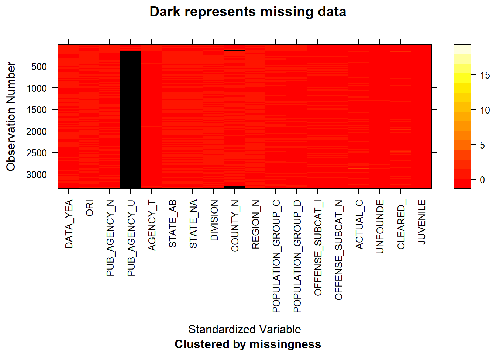
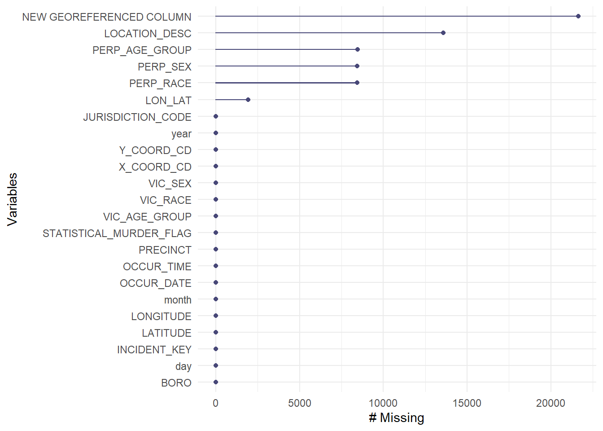

Chapter 5 Results
5.1 Human Trafficking

5.2 Hate Crimes

5.2.0.1 Insights
Kings County (Brooklyn) had the highest total number of hate crimes over the years 2019 and 2020. This was followed by New York (Manhattan) and then Queens.
The only county/borough to have experienced an upturn in hate crimes in 2020 was the Richmond county (Staten Island Borough).
This is confirmed by articles such as (Source: silive.com https://www.silive.com/crime-safety/2021/04/staten-island-was-the-only-borough-in-nyc-with-an-increase-in-hate-crimes-in-2020-why-where-were-they-crime-analysis.html)

5.2.0.2 Insights
The largest proportion of hate crimes stem from religious reasons, followed by race and sexual orientation.
Kings County (Brooklyn) has a much larger proportion of these religious crimes. Interestingly, although the total number of hate crimes is greater in Kings County (Brooklyn) than New York County (Manhattan), the number of crimes stemming from Sexual Orientation and Race/Color is greater in New York County than Kings County.

5.2.0.3 Insights
Anti- Jewish hate crimes seem to be the largest in number (by a large amount, almost 350 crimes) during this time period, followed by anti-homosexual (gay) and anti-black crimes.

5.2.0.4 Insights
As expected from the previous 2 graphs, Kings County (Brooklyn) has the highest number of anti-jewish crimes. Kings County has a disproportionately large number of these crimes, whereas other motive types like anti-black or anti-homosexual seem to be equal in the boroughs of Kings and New York (Manhattan).
These insights are confirmed by articles such as (https://www.cbsnews.com/news/nypd-to-increase-presence-in-brooklyn-after-string-of-anti-semitic-hate-crimes/ Source: CBS News)

5.2.0.5 Insights
Across the city of New York, the number of hate crimes went down in 2020 (by almost 40%). Sexual orientation crimes decreased, whereas crimes based on race/color unfortunately went up in number.

5.2.0.6 Insights
Across both years, it is visible that there is a dependance on the month when it comes to the number of crimes.
However, for all months, 2020 had lower number of hate crimes than there were in 2019. The highest crime number for both years was in the month of March.

5.2.0.7 Insights
The insights from this mosaic plot corroborate our findings from the previous plots.

5.2.0.8 Insights
The majority of arrests, if made, were made within 50 days since the report creation, for both the years 2019 and 2020. This indicates a heavy right-skew in the graphs.
Only very few arrests were made beyond the 50-day mark in both years.

5.2.0.9 Insights
Criminal Mischief, Aggravated Assault and Aggravated Harrassment were the most code of hate crimes committed.
## [1] 149
5.2.0.10 Insights
Unfortunately, the majority of offenders in hate crimes during 2019 and 2020 have not been arrested.
506 offenders were not arrested, whereas 222 arrests were made.
This picture might be offset in the case of one person commited multiple hate crimes and then being arrested. As we do not have information regarding arrest details, such analysis is omitted here.